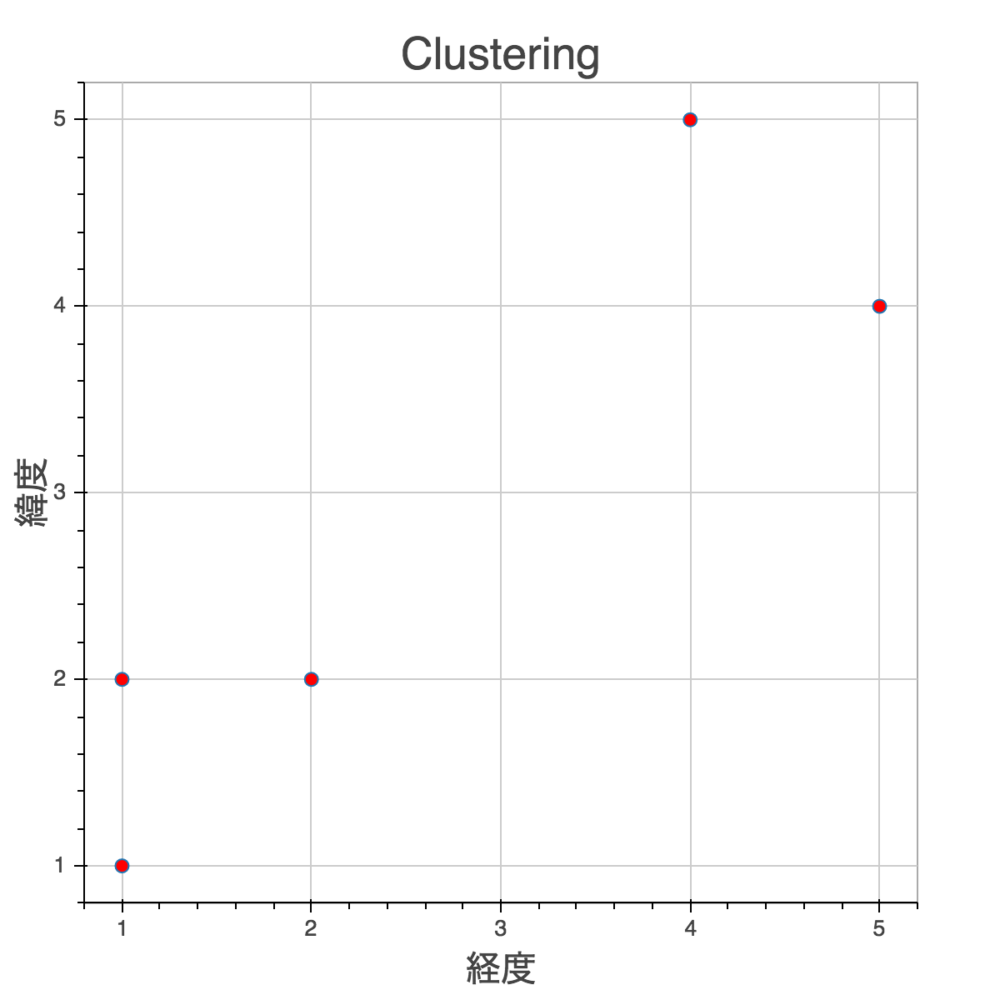
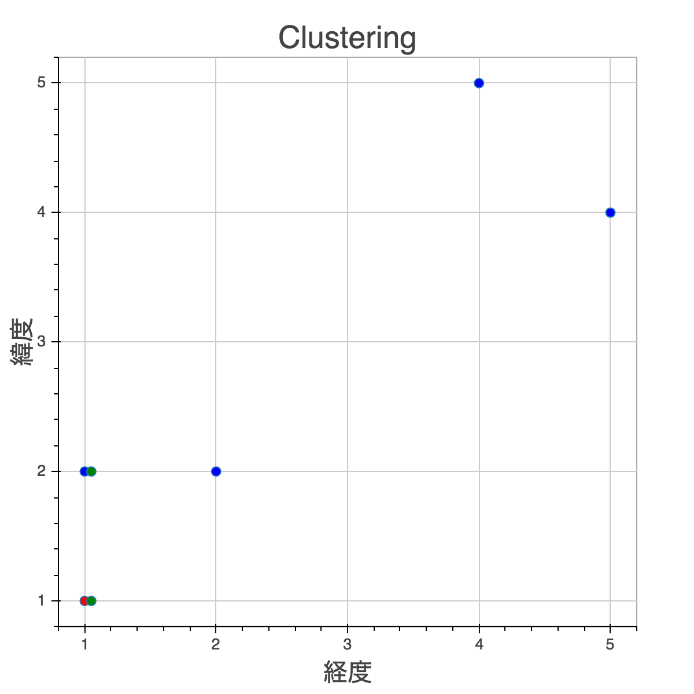
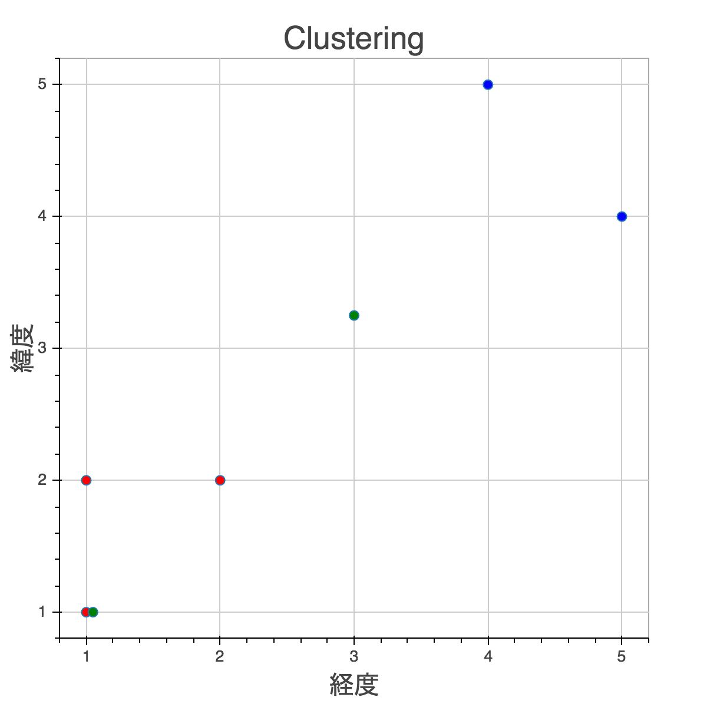
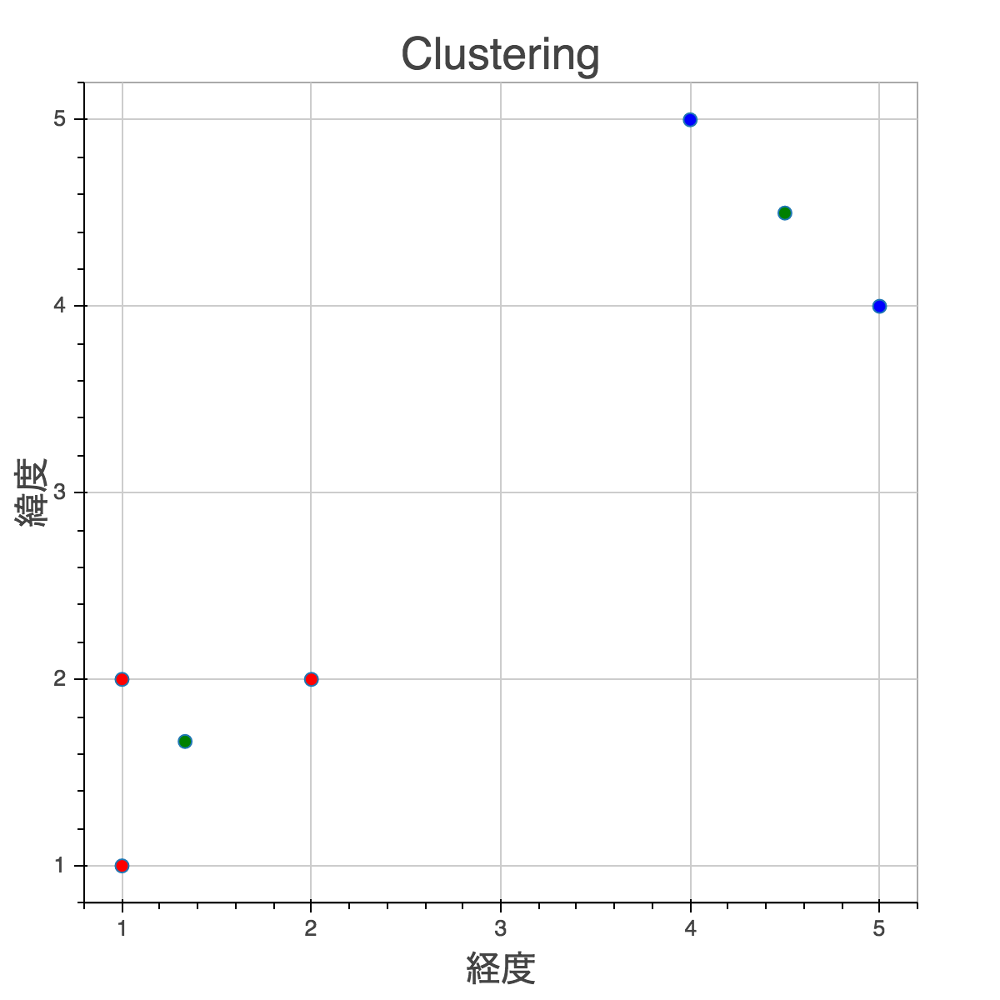
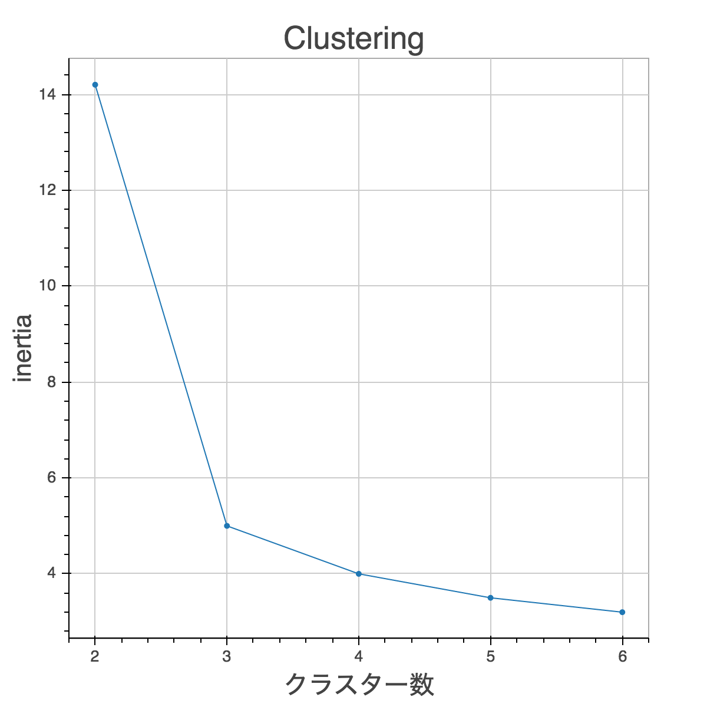

今回はK-Meansという一番シンプルで有名なクラスタリングのモデルを勉強します。
以下のデータを２つのクラスターに分けたいとしましょう。

まずcluster center(クラスターの中心値)をランダムに決めます。一番簡単な方法は、Xの中からランダムに選ぶ方法です。この場合(1,1)と(1,2)を選びました。Xと被らないように少しずらしてますが本当は同じ値です。
次に、それぞれのデータでどっちのcluster centerに近いかをEuclidean Distanceを使って計算します。この場合(1,1)以外の４つのデータは全て(1,2)の方に近いです。

次にcluster centerをアップデートします。方法は簡単で、そのクラスターに属してるデータの平均値を取ります。(1,1)に関しては属してるデータが(1,1)しかないのでそのままです。
(1,2)は属してるデータが４つあります。x軸とy軸でそれぞれ平均を取るのでx軸は
y軸は
となります。
後は同じステップを繰り返すだけです。cluster centerがアップデートされたので、クラスターもそれに応じて変化したのが分かります。

これを繰り返していくうちにcluster centerはこのようになります。

Exercises
今回もscikit-learnのK-Meansと同じAPIにします。
import numpy as np
class MyKMeans(object):
def __init__(self, n_clusters=8, max_iter=300, random_state=None):
self.n_clusters = n_clusters
self.max_iter = max_iter
self.random_state = random_state
if self.random_state:
np.random.seed(self.random_state)
Exercise 1
クラスターの初期値をn_clustersの分だけ作ります。Xからランダムに選びself.cluster_centers_に入れましょう。
Exercise 2
次にEuclidean Distanceを計算します。k-NNの時に書いたので計算の方法は分かると思います。しかし今回はインプットが2d array(centers)と1d array(x)なので、xとそれぞれのクラスターの中央値とのEuclidean Distanceを計算して下さい。
numpyのbroadcastingを使えばループなしでいけます。
Exercise 3
次に一番近いクラスターのindexをリターンするメソッドを書きましょう。_distanceを使って下さい
Exercise 4
やっとメインのアルゴリズムが書けます。_nearestを使ってxがどのクラスターに属するかを計算しself.labels_に入れています。
これを使ってXをクラスター毎に分けましょう。
def fit(self, X):
initial = np.random.permutation(X.shape[0])[:self.n_clusters]
self.cluster_centers_ = X[initial]
for _ in range(self.max_iter):
self.labels_ = np.array([self._nearest(self.cluster_centers_, x) for x in X])
X_by_cluster = # your code here
return X_by_cluster
Exercise 5
self.cluster_centers_をアップデートさせましょう。X_by_clusterの平均値を取ります。
Exercise 6
学習には不要なのですが、どれだけ上手くクラスタリングされてるかを見るためにinertiaという指標を使います。 inertiaはそれぞれのcluster centerとそれに属してるデータのSquare Distanceの合計です。Square DistanceはEuclidean Distanceのルートを取らない版です。
例えばcluster center(1,2)とx(3,4)のSquare Distanceは
です。
Early Stopping
実際は何回目でcluster centerが動かなくなるか分からないので、max_iterを適当に選んでやります。
データが少ない場合はこれでも良いんですが、データが多い場合は無駄な学習時間を削減したいです。その為にはself.inertia_がほとんど変化しなくなったらストップするという方法があります。
scikit-learnではtolerance(tol)というパラメータがあり、どれくらい変化しなくなったら止めるかというのをここで設定することでが出来ます。
もし余裕があれば書いてみて下さい。
最適なクラスター数
何クラスターに分けたいというのが決まってる場合は問題ないのですが、多くの場合は幾つに分けたらいいか分からないというのが普通です。
最適なクラスター数を見つける一番簡単な方法は、クラスター数別にinertiaを見てinertiaの減少が著しいところを選びます。
以下の例だと、クラスター数が３の場合２の時よりもinertiaが大幅に減少しています。しかしそれ以上クラスター数を増やしてもそこまでinertiaが減少していないので最適なクラスター数は３と言えます。

もっと複雑なテクニックもありますが、これだけ知っていれば十分でしょう。